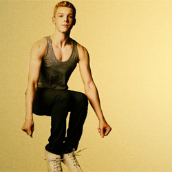

| Home | The Gallaghers | Main Charcters | About The Series |
|
Ian GallagherIan Clayton Gallagher (Cameron Monaghan) is the third of the Gallagher siblings , and according to Frank the one who resembles the most their mother Monica. It is revealed in season 1 that Ian is not Frank's biological child, and Monica seems unable or reluctant to remember his father's identity. After this revelation, Ian remains an integral part of the Gallagher household. He participates in Army JROTC at school, and during season 1 works at the Kash and Grab grocery store. When the show starts, the only other person aware of his homosexuality is his employer Kash, with whom he entertains an affair. He then comes out as gay to his brother Lip, and eventually the rest of his family. He then develops a complicated relationship with his neighbor Mickey Milkovich. |